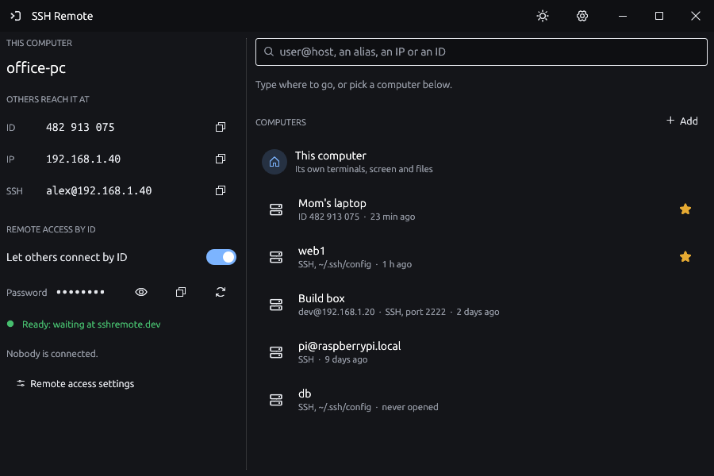
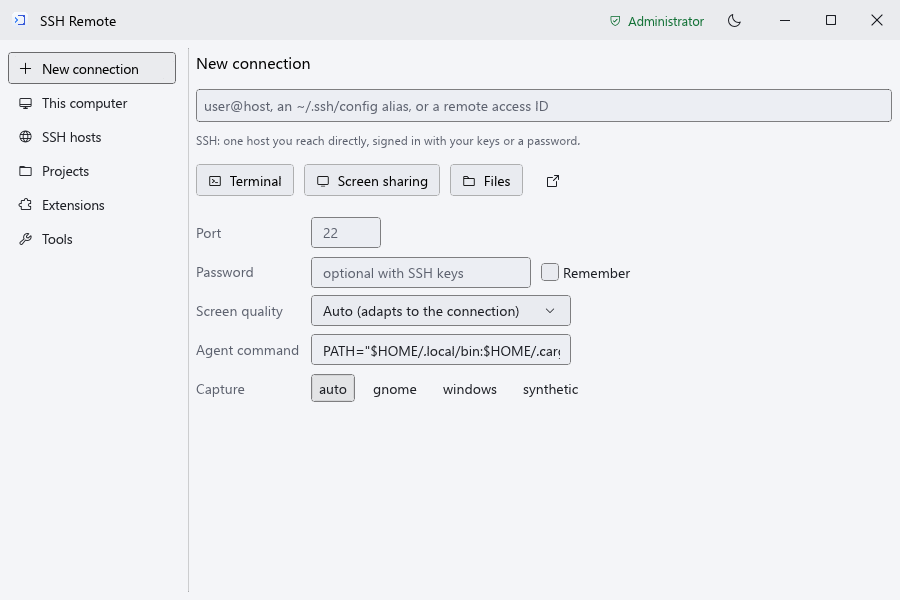
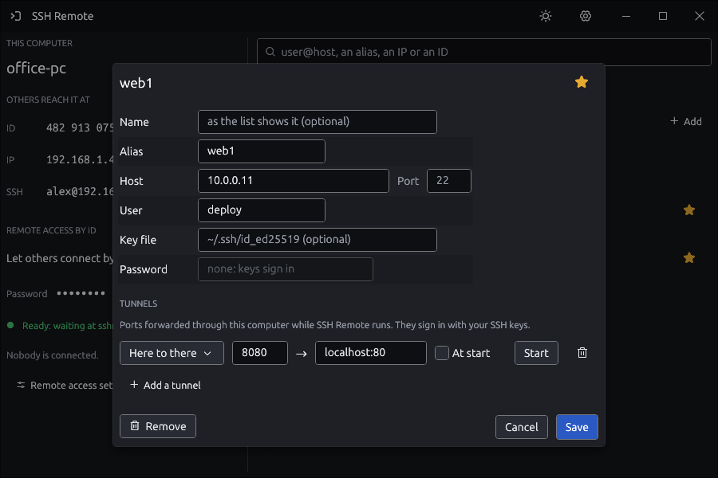
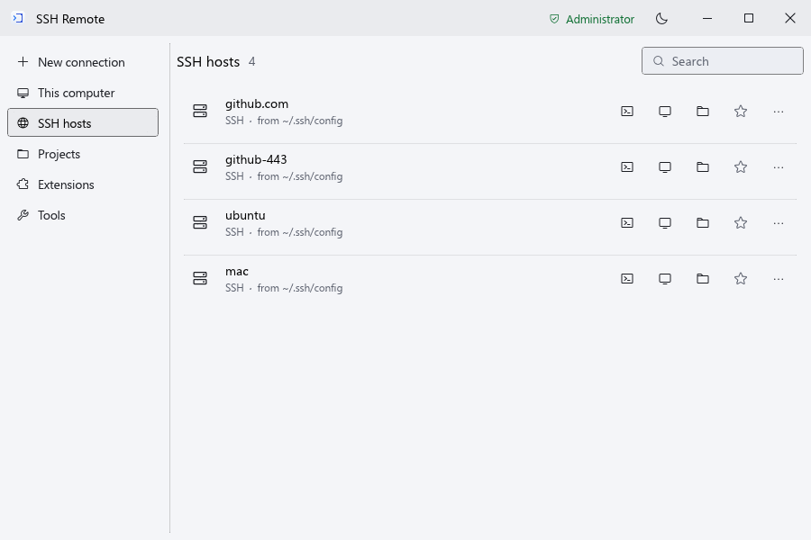
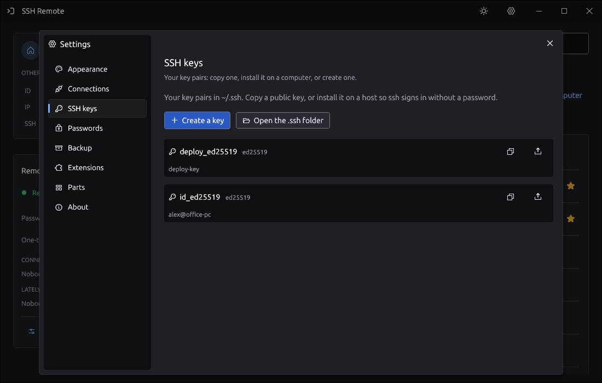
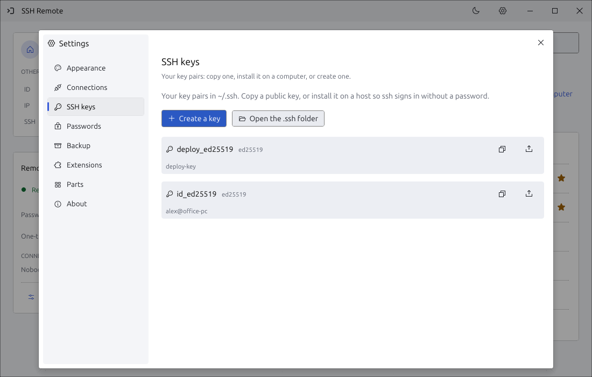

Terminal, screen and files. One SSH login.
SSH Remote opens a shell, the desktop and the file system of another computer side by side, over the SSH you already use. No account, no open port, nobody in between.
- Windows and Linux
- One file, nothing to install
- Open source, written in Rust


One field for every computer, and tabs that switch between shell, screen and files
Type user@host, an alias, an IP or a remote access ID and open its terminal, its screen or its files. Each computer keeps its name, key, saved password and SSH tunnels; aliases stay in ~/.ssh/config. In the workspace each tab is a computer, split beside or below, and lost connections come back by themselves.
- ScreenKeyboard and mouse, monitors, one window, clipboard with files, sound, chat, voice calls, recording
- FilesTwo panes, drag and drop, never overwriting
- TunnelsHere to there, there to here and SOCKS, also through a computer by its ID
- TrafficLossless text in a third less than RustDesk's AV1; black and white for the thinnest links


For the PC on Wi-Fi with no address and no SSH
Turn it on and the PC gets a lasting 9-digit ID. Type that ID and its password on the other side; both ends dial out to the relay, which only copies bytes it cannot read.
- CryptoSPAKE2 password proof, ChaCha20-Poly1305 on every byte, two-step codes
- ConsentAsk the person there first; rights for keyboard, clipboard, files, sound, tunnels
- ServiceOne button to start with the computer, sign-in screen included
- DirectPast the relay when a path through both routers is found (NAT hole punching)
- NearbyFound on the same network, reached straight, woken by Wake-on-LAN
- AbuseWrong passwords wait longer each time; attempts are limited


The SSH chores, done properly
Make, copy and install keys, keep passwords in the system's password store, and back up your computers, settings and all of ~/.ssh under a passphrase.


Small things that add up
Screen in a terminal
sshremote HOST draws the desktop with sixel in Windows Terminal, WezTerm, foot or VTE, even through tmux.
Two reading views
Read any output as a numbered text document, or rendered as Markdown with tables and code blocks.
Light on the link
Only changed rectangles, in one zstd stream; H.264 just where things move. Quality follows the connection.
MCP for AI agents
sshremote mcp HOST lets an agent read the window as text and press its buttons.
Web gateway
sshremote web serves your terminals and screens to a browser.
Extensions
Styles, scripts and programs from a signed registry, each held to the permissions it names. Browse
Two ways in. Pick by what the other PC has.
| SSHone to one | ID and passwordthrough the relay | |
|---|---|---|
| Use when | You can already ssh to the host | The PC is behind Wi-Fi or NAT with no fixed address |
| Sign-in | Your keys, agent and ~/.ssh/config, unchanged | A 9-digit ID and a password you set or generate |
| In between | Nothing. It all runs inside the SSH session | The relay, which pairs both ends and sees only sealed bytes |
| Terminal | Yes | Screen and files |
| Start | | |
Get SSH Remote
A single program. Put the same file on your computer and on each host: ~/.local/bin/sshremote on Linux, anywhere on PATH on Windows.
From source: cargo build --release, see the README.
Running in a minute
Put it on both ends
The same file on this computer and on the host.
chmod +x sshremote-linux-x86_64
mv sshremote-linux-x86_64 ~/.local/bin/sshremoteOpen it
Pick a host from ~/.ssh/config, or type one.
sshremoteOr go straight there
A terminal, the screen or the files.
sshremote --gui user@host --open files